OROSI Interactive Pavilion: Reimagining Iranian Orosi as a Responsive Light System
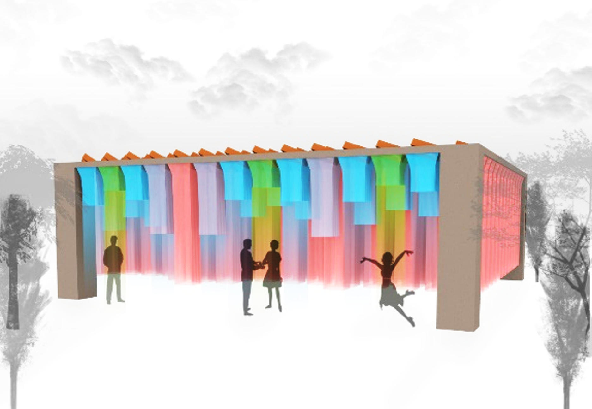
Summary
OROSI Interactive Pavilion is a Digital Futures 2021 workshop group project that translates the logic of Orosi—Iranian latticed windows with colorful glass—into an interactive pavilion. The system uses a modular ceiling grid, three kinetic colored layers (blue, green, red), and a field of hanging fabric modules to produce dynamic daylight effects and an engaging interior experience.
The pavilion responds to environmental stimuli (wind direction/speed) and human stimuli (presence, proximity, movement). Panels rotate for ventilation alignment, while fabrics move up/down and color layers slide to shift the perceived atmosphere—creating a memorable, responsive space rather than a static façade.
Invoke traditional Orosi principles (pattern + colored light) for visual comfort and a richer interior experience
Extend Orosi beyond the façade into a spatial pavilion with modular kinetic panels
Create a system that feels alive: shifting colors, moving fabrics, and breathable envelope behaviors
Inputs → actions
Wind: rotate panels toward wind direction for ventilation
Human proximity/motion: change panel color logic + raise/lower hanging fabrics
Color system: three sliding layers (blue/green/red) blend into different atmospheres
Background: Orosi as a precedent for adaptive daylight
Orosi is a traditional Iranian architectural element: a latticed window filled with colorful pieces of glass and Iranian–Islamic patterns.
Beyond aesthetic value, it shapes daylight by filtering sun rays into colored projections—functioning as a passive strategy to adjust light quality and atmosphere.
This project builds on that principle and asks: what if Orosi becomes an interactive spatial system rather than a fixed window?
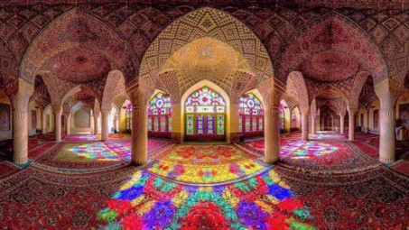
Precedent: immersive colored light as a spatial medium.
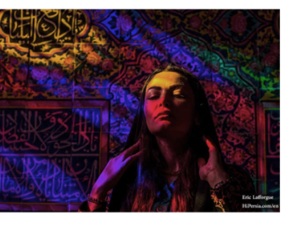
Reference: color projection and patterning inform the pavilion’s atmosphere goals.
Design concept: a kinetic pavilion of panels + hanging fabrics
The pavilion is composed of a modular ceiling grid and layered panel units that translate Orosi’s colored-light logic into a physical system.
Instead of glass, the concept uses colored sliding sheets and hanging fabrics to filter and modulate light.
The hanging elements also make the interaction legible: users can see and feel the pavilion respond in real time.
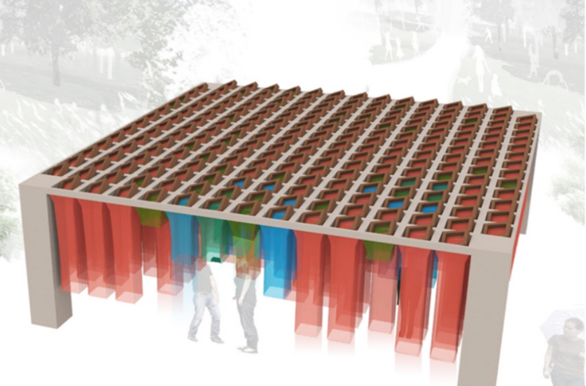
Axonometric concept: modular grid + hanging colored elements (three-layer kinetic color system).
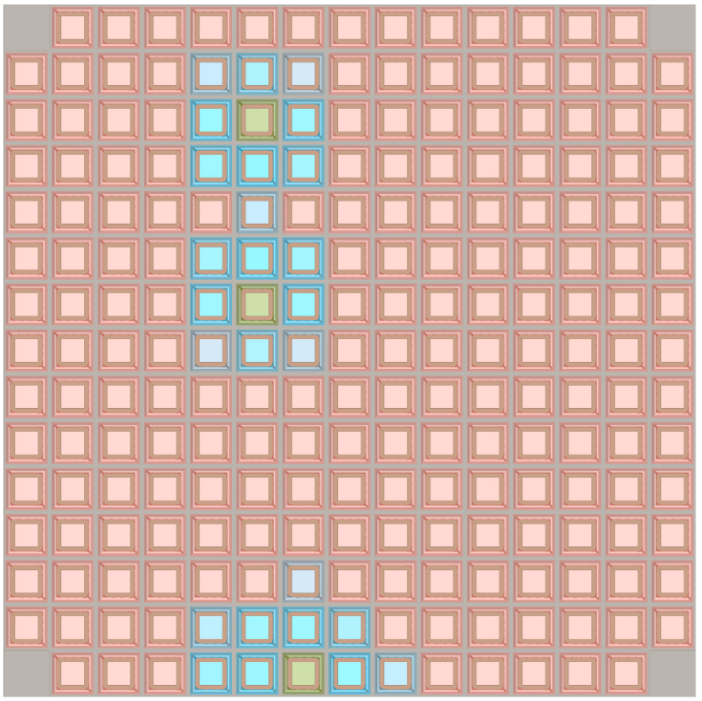
Panel grid: a patterned carrier for kinetic layers and modular units.
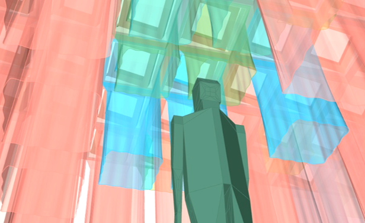
Hanging fabrics: translucency + overlap produce blended atmospheres that change through motion.
Interaction logic (experience behavior)
The goal was to create a pavilion that offers a mesmerizing and memorable experience by responding to both environment and human activity.
The height of the fabric modules and the perceived color of the panels react to physical movement and proximity.
As a person walks through the pavilion, the fabrics vary in height with distance, and the color logic shifts—e.g., a panel may transition toward blue as a user approaches and alter when the user is directly beneath it.
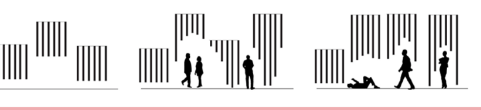
Storyboard silhouettes: the pavilion reacts across movement, gathering, and pause moments.
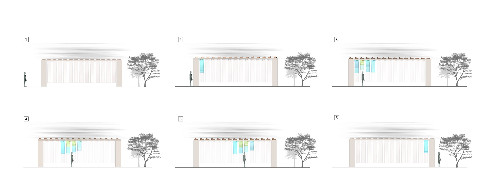
Elevation sequence: visible changes in fabric height and color distribution as users move.
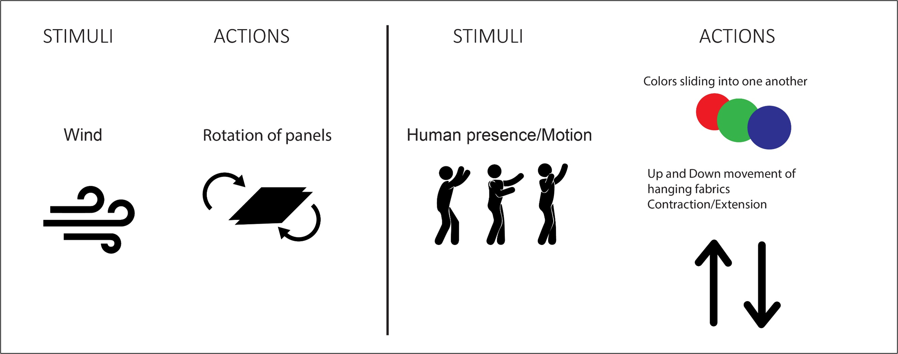
Stimuli → actions: wind drives panel rotation; human presence/motion drives color transitions and fabric movement.
System architecture: sensing, computation, and actuation
The concept is organized as a simple input–process–output loop. Environmental and human metrics are sensed, interpreted in a control layer,
and translated into mechanical actions through actuators.
Inputs (stimuli)
Environmental metrics: wind direction / speed
Human metrics: proximity and physical movement
Possible digital layer: smartphone data analytics (conceptual)
Sensing + control
Wind sensor reads direction for rotation behavior
Ultrasonic proximity sensor detects a user below a module
Software logic maps sensor readings to target states (open/close, rotate, slide, expand/contract)
Actuation
Servo motor: rotates panels for ventilation alignment
Linear actuator: slides color layers into one another
Shape Memory Alloy (SMA): contracts/extends to raise/lower fabrics
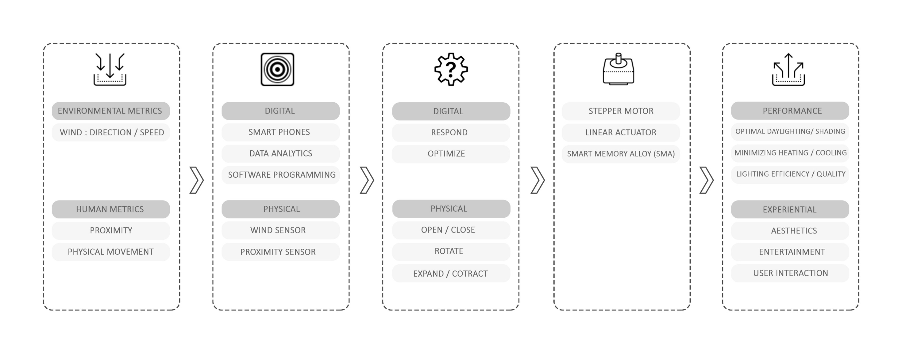
Pipeline: metrics → sensors/software → actuators → performance + experiential outcomes.
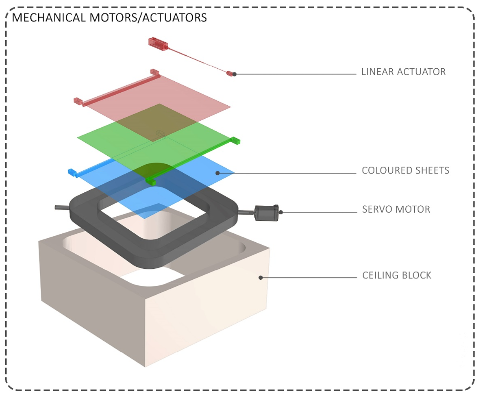
Exploded mechanism: layered sheets (RGB) slide via linear actuation; rotation supports ventilation behavior.
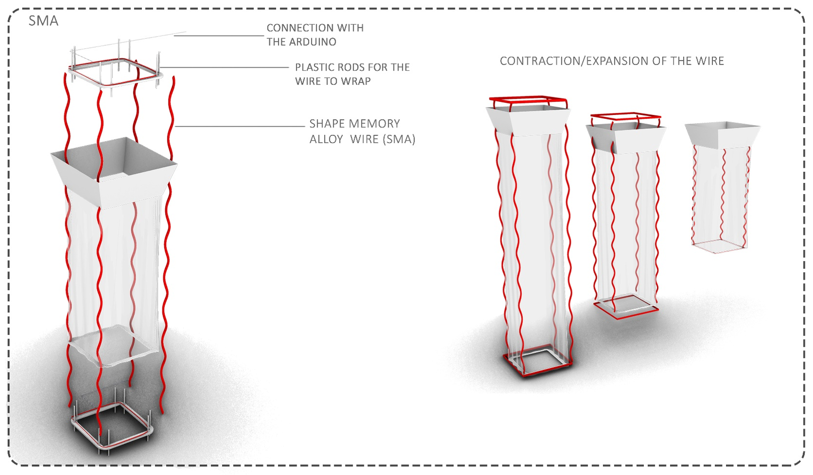
SMA concept: contraction/extension at two attachment points moves hanging fabrics up/down.
Performance + experiential targets
Optimal daylighting/shading: treat color + translucency as a controllable daylight filter.
Ventilation awareness: rotating panels align with wind direction to improve air movement.